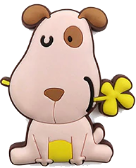
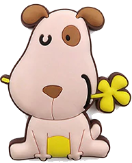

Nicole đang trên đường đến nhà bạn của cô ấy. Nicole phải băng qua một khu rừng, tại đây cô đã bị những con thú trong rừng chặn lại và bắt phải giải đáp mỗi câu hỏi của chúng. Nào! Hãy giúp Nicole nhé

Wow bạn giỏi quá. Cảm ơn bạn đã giúp mình vượt qua thử thách của những bạn thú rừng này. Bạn có thể thử làm lại hoặc về trang chủ gặp những bạn khác nhé
 



... là chú chó rất tinh nghịch, và khôn ranh
Có công mài sắt có ngày nên...
Hà Nội là thành phố tôi được sinh ra.
Tuy cô ấy bị đau chân nhưng cô ấy đi học rất đều đặn.
1 - Cậu làm ơn lấy giúp tớ cái bút với!
2 - Cái bút của cậu đẹp quá!
3 - Cái bút kia của cậu à?
4 - Cái bút của tớ có màu xanh.
Tôi có nuôi một chú chó màu đen ?
ù ... ù ... ù ... tầm một lượt.
Ta ghép thử thì thấy: Nó là chú chó rất tinh nghịch, và khôn ranh sẽ hợp lí nhất.
Các từ còn lại ghép vào không có nghĩa hoặc sai nghĩa vì không ai nói:
- Con là chó ...
- Mèo là chó ...
- Tôi là chó ...
Có công mài sắt có ngày nên kim.
- Rõ ràng rồi là câu tục ngữ dân gian ý muốn nói khi ta cố gắng kiên trì làm một việc gì đó ta chắc chắn có ngày đạt được thành quả.
Hà Nội là thành phố tôi được sinh ra.
- Hà Nội là danh từ và đứng đầu câu nên Hà nội sẽ là thành phần chủ ngữ
Tuy cô ấy bị đau chân
nhưng
cô ấy đi học rất đều đặn.- Tuy - nhưng là các từ nối câu và là quan hệ từ biểu thị tương phản vậy nên nó là cặp quan hệ từ
Cậu làm ơn lấy giúp tớ cái bút với
- làm ơn - giúp là các từ mang tính chất cầu khiến. Vậy nên câu này sẽ biểu thị sự cầu khiến
Tôi có nuôi một chú chó màu đen ?
- Ta thấy đây là câu trần thuật vậy nên không thể có dấu chấm hỏi ở cuối câu được
ù ... ù ... ù ... tầm một lượt.
- Ù Ta thấy từ này biểu thị âm thanh kéo dài và ở xa vọng lại nên cầu này mang tính chất Phản ánh trạng thái của hiện thực như khoảng cách về không gian, thời gian, âm thanh kéo dài, đứt quãng.
Con chó/ chạy sải thì con khỉ/ gò lưng như người/ phi ngựa
- Một câu có nhiều cặp Chủ ngữ - Vị ngữ thì đó là câu ghép